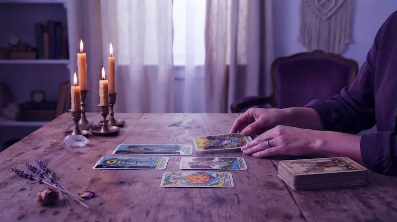
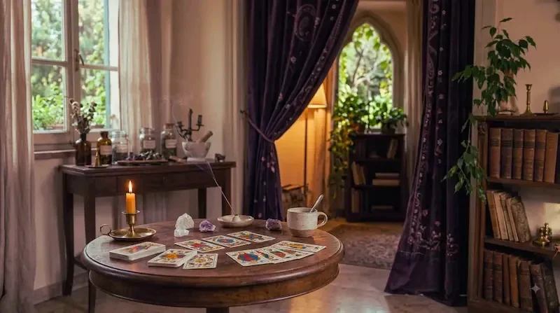
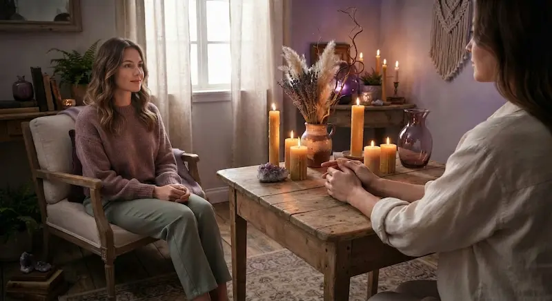
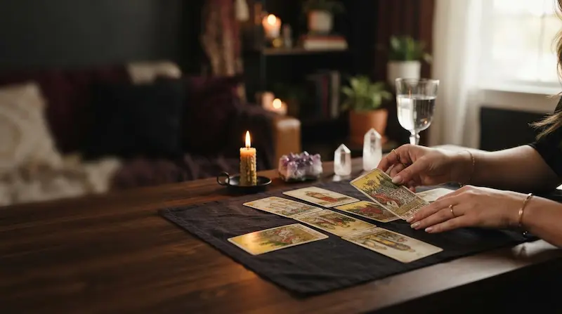
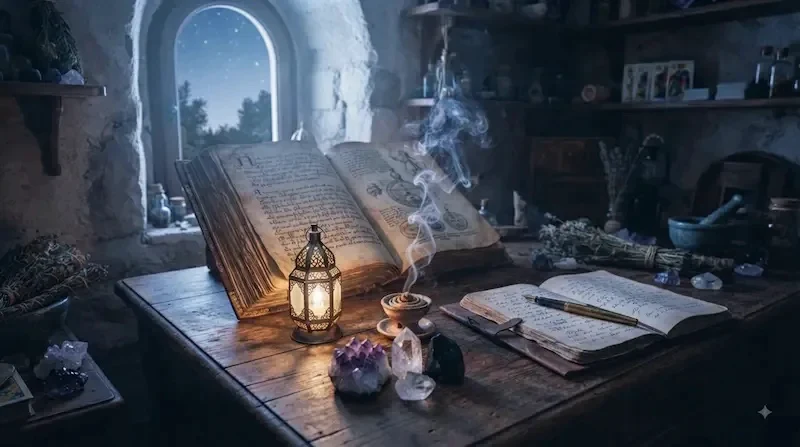
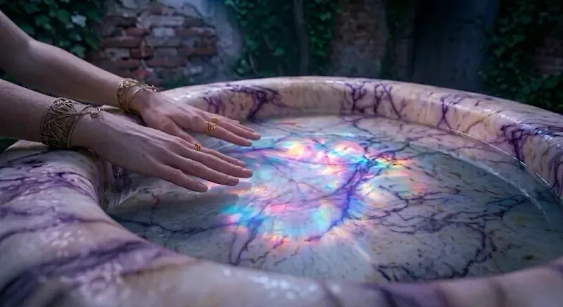

Tariffe
Offro due modi di ricevere una consulenza: in videochiamata, oppure interamente per iscritto. Qui trovi in modo chiaro cosa offro e il relativo costo.
In questo momento alcune consulenze non sono disponibili. Puoi comunque scrivermi tramite la pagina Contatti per essere avvisata/o non appena riapriranno.
Consulenze online

Un primo incontro breve, per fare chiarezza su una domanda specifica.

Una sessione completa, con più spazio per approfondire e guardare in profondità.

Consulenza spirituale — una ricerca intima, una guarigione interiore, un cammino spirituale, o il desiderio di conoscere Dio.
Consulenze scritte
Non tutto ha bisogno di essere detto a voce. Mi scrivi ciò che porti, io mi prendo il tempo di leggerlo, lavorarlo e risponderti per iscritto — senza videochiamata.
Una domanda precisa, una lettura essenziale, una risposta scritta breve.

Una stesa più articolata e una restituzione scritta personalizzata, pensata per essere letta con calma.

Una domanda sul tuo cammino spirituale, o un'esperienza sulla quale desideri fare luce.

Uno spazio dedicato di 24 ore per dialogare per iscritto — attraverso i Tarocchi o una questione spirituale/interiore, a tua scelta.
Per la tarologia: le domande vengono sempre orientate verso ciò che riguarda te e il tuo vissuto. Se la domanda che invii richiede una previsione sul futuro o riguarda la volontà di un'altra persona, ti guiderò nella riformulazione. Se preferisci non riformularla, mi riservo di rispondere nel modo che ritengo più utile per te, mantenendo il senso originale della tua richiesta.
Cerchi qualcosa di diverso da una consulenza? Scopri la Lettera per l'anima.
Non sai ancora quale scegliere?
Cinque domande, senza risposte giuste o sbagliate — solo per aiutarti a sentire da dove nasce il tuo bisogno in questo momento.
1. Da dove nasce il tuo desiderio di incontrarmi?
2. Se potessi ricevere qualcosa da questo incontro, cosa vorresti che fosse?
3. Quale di queste frasi senti più vicina a te oggi?
4. Quando pensi al futuro, cosa senti di voler comprendere?
5. Quanto senti di avere chiaro ciò che stai cercando?
Preferisci scrivermi direttamente? velum.dei.lux@gmail.com